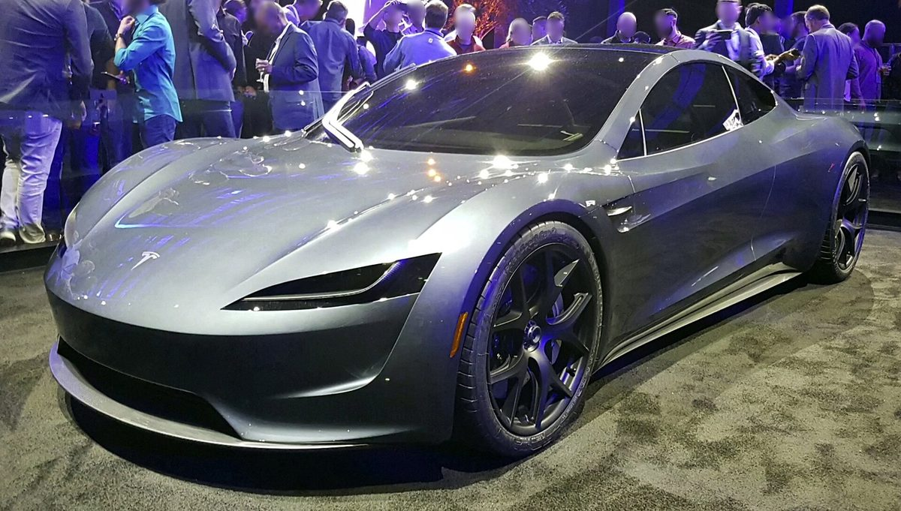

Thrusters, suction fans, and a car that sticks to the ceiling
Tesla unveiled a SpaceX-powered Roadster that drove inverted, flipped in the air, and jumped a row of company vehicles. Production is aimed at 2028.
Elon Musk @elonmusk · CEO, Tesla and SpaceX
After the show, Musk posted a clip that passed 27 million views by Friday morning:
"Turns out the future does have flying cars"
TechCrunch and The Verge reported the demo from a SpaceX site near Waco: suction fans held the car on an inverted ramp, cold-gas thrusters spun and landed it, and thrusters later lifted it over a Cybercab, Cybertruck, Semi, Model Y and Model 3. Engineering vice president Lars Moravy said 10 thrusters draw on about 600 liters of compressed air in carbon-fiber overwrapped tanks packed into every usable void. Range is about 300 miles; top speed exceeds 230 mph. Tesla is taking a $50,000 deposit for Performance and $250,000 for Thrust; Rocket is invite-only.
Earlier Thursday Musk had teased the stream with "Tesla x SpaceX" and wrote "Success is not certain, but excitement is." After the hop he thanked Sundar Pichai: "It's such an honor working with incredible engineers." Liv Boeree noted the claimed sprint: "0-60mpg in 0.81 seconds is over 3.3 Gs WHAT ON EARTH" — Musk replied, "You're right, we can do better." He also quoted that his original Roadster is "still orbiting Mars and Earth."

John Carmack and Ashok Elluswamy @ID_AA_Carmack · @aelluswamy
Carmack, watching the ceiling stick, explained the physics and set his own shopping limit:
"That demo involved a non trivial chance of embarrassing failure! I'm only going for the baseline model. At this point in my life, rocket bunny hops are out of my comfort zone."
On suction without thrusters he added: "Suction fans pulling it down. It doesn't require the thrusters for that… This alone will allow extreme cornering and super hard launches." Musk: "True." Tesla's AI head Ashok Elluswamy quote-posted the company clip with "Sci-Fi company."
Watch-list reactions builders on the hop
Sundar Pichai: "The FSD version of this will be something:) congrats!" Demis Hassabis: "Huge congrats… Blade Runner cars here we come..." David Heinemeier Hansson, who put down $50,000 eighteen months ago, wrote that the first safety question misses the point:
"If your first response to the Tesla Roadster is "is that safe??", you've lost all sense of wonder. Safety is not and never was the meaning of life. I'd happily spend a few micromorts on a flying car."
He later: "And if Tesla offers me the option for Rocket, I will happily add a second Roadster to the fleet!" Aaron Levie tied the night to a longer list: "So in fact we actually can get robots, flying cars, superintelligence, fast internet on planes, space travel, space colonies, orbital data centers, unlimited energy, likely cures for nearly every disease, and more all in our life times. Pretty great." Joe Gebbia, Guillermo Rauch, Tom Brown, Uncle Bob Martin, Palmer Luckey and Tobi Lütke (who resurfaced Musk's 2019 thruster plan) all posted in the same window.
Uncle Bob Martin @unclebobmartin on the demo: "Practical? No. Extravagant? Utterly! Beautiful? Absolutely! Will I buy one? No chance. Did I cheer? Enthusiastically!"